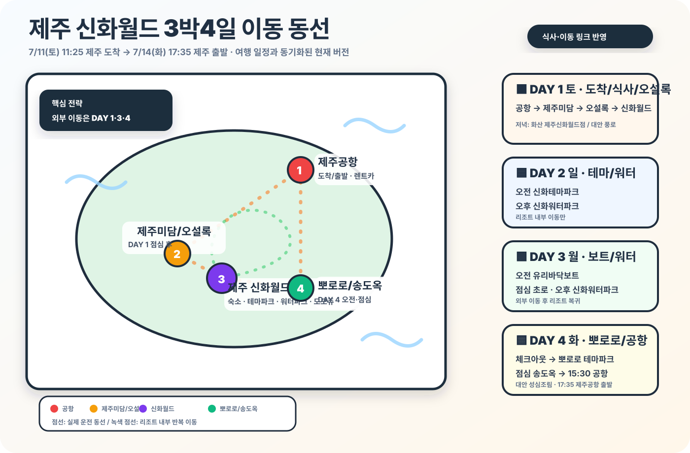

DAY 17/11 토 · 도착/오설록
점심 제주미담, 저녁은 화산 제주신화월드점
도착일은 점심·오설록·체크인·저녁까지 핵심 동선만 잡습니다.
두 가족, 총 6명 / 7/11(토) 11:25 제주공항 도착 → 7/14(화) 17:35 제주공항 출발. 핵심 전략은 “낮잠 유지, 외부 이동 최소화, 신화월드 내부 만족도 극대화, 토요일 화산 BBQ + 불꽃놀이”입니다.
한 줄로 읽히는 DAY별 타임라인 차트로 바꿨습니다. 왼쪽은 날짜, 오른쪽은 시간 순서라 가족끼리 공유하기 쉽습니다.
도착일은 점심·오설록·체크인·저녁까지 핵심 동선만 잡습니다.
오전은 놀이공원, 점심은 명희식당, 오후는 물놀이로 이어가고 저녁은 아직 비워둡니다.
여행 일정 변경 시 함께 맞춰 관리하는 이동 동선입니다. 현재 기준: DAY 1 공항 → 제주미담 → 오설록 → 신화월드 / DAY 2 신화월드 내부(점심 명희식당·저녁 미정) / DAY 3 유리바닥보트 → 초로 → 신화워터파크 → 저녁 미정 / DAY 4 뽀로로 테마파크 → 송도옥 → 공항.

유튜브 메타데이터 기준으로 최근 1년 내 업로드 영상을 다시 선별했습니다. 22개월 직접 일치 영상을 우선 배치하고, 부족한 부분은 22개월에 가까운 영유아 동반 신화월드 영상으로 보완했습니다.